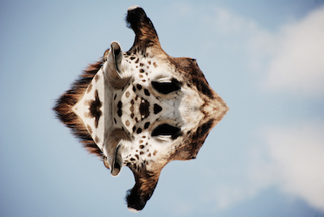

3. Image Processing With Conditionals¶
Quick Overview of Day
Use nested loops to practice simple image processing, this time including conditionals to control when certain effects are done.
3.1. Applying an Effect Based on Pixel Colour¶
Say you had an image that looked like this:

moon.jpg
Due to the contrast in the image, we can apply certain effects to only a portion of the image. For example, we could turn the sky (which is currently black) into another colour, while leaving the moon itself untouched. The following code turns the sky a light gray colour.
3.1.1. Try This¶
Adapt the code above to:
- change the color of the sky to a different colour (something other than gray)
- instead of changing the sky, adapt the program to tint the moon slightly blue
- switch the image to be
bird-far.jpg, then change the program so that all of the sky is “erased” (turned white), while the bird itself is left alone
3.2. Applying an Effect to an Area of an Image¶
You might want to affect only one area of an image. For example, perhaps you want to make the left half of the following image grayscale, but leave the right half of the image unchanged.

sneakers.jpg
To apply an effect to just the left hand side, we can write a program that iterates through every pixel, but only apply the grayscale effect if the x coordinate is in the left half of the image. Here is a program that does just that:
3.2.1. Try This¶
Adapt the code above to:
- adapt the program so that the left half of the image remains unchanged, but the right of the image is converted to grayscale
- adapt the program so that the bottom half of the image is converted to grayscale
- change the program so that the animation of the pixel manipulation goes from top to bottom (instead of left to right)
3.3. Combining Images¶
If you want to combine two images together, you need to copy the pixel information from one image onto the pixel information of the other image. For example, if we want to have the smile emoji below show up in the image of the rooster, we need to look through each of the pixels in the smile image to see if we are looking at a white background pixel, or part of the image that we should be copying over to the rooster image. Note that to make this example simpler, the teeth in the smile emoji have been turned slightly off-white, and the color of the emoji has been changed so that the yellow value of the emoji is (248, 216, 102). This allows us to check whether a pixel is white by simply checking if all of the rgb values are above a threshold of 250.

smile.png

rooster.jpg
When we are copying the smile over to the rooster image, we can adjust where the smile should appear by adding/subtracting some value from x or y when we call original_image.set_pixel() on line 36.
3.3.1. Try This¶
Adapt the code above to:
- adapt the program the smile shows up on top of the rooster’s head
3.4. Practice Problems¶
For the following problems, use one of the images from the examples above, or one of these new ones:

bird-far.jpg

berries.jpg

giraffe.jpg

ban.png
3.4.1. No Red Left Side¶
Write a program that sets the red intensity of all pixels on the left half of the picture to be 0. On the right side of the picture, the red intensity should remain the same as the original value. The green and blue intensities should remain the same as the original for all parts of the image.
If you are using the berries.jpg image, your solution should look something like this:

3.4.2. Blue Tint Top Right¶
Write a program that makes the top right quarter of the image be tinted blue (by increasing the amount of blue in that area of the image).
If you are using the sneakers.jpg image, your solution should look something like this:

3.4.3. Change the Rooster Colour¶
Write a program that changes the colour of the rooster’s comb and wattle (the red stuff on the rooster’s head) from red to blue. Note that your program will likely only partially work. That is okay! The edges of the converted parts of the image do not need to be clean.
If you changed the rooster from red to blue, your solution should look something like this:

3.4.4. Repeat Left Twice¶
Write a program that takes the left side of an image and displays it both on the left half, and the right half, of the image. In other words, replace the right side of the image with a copy of the left side of the image.
If you are using the giraffe.jpg image, your solution should look something like this:

3.4.5. Mirror Horizontal¶
Write a program that mirrors an image from left to right around a vertical line of symmetry in the middle of the image. Hint: you’ll need to figure out how far away from the line of symmetry you are…
If you are using the giraffe.jpg image, your solution should look something like this:

3.4.6. Mirror Vertical¶
Write a program that mirrors an image from top to bottom around a horizontal line of symmetry in the middle of the image. Hint: you’ll need to figure out how far away from the line of symmetry you are…
If you are using the giraffe.jpg image, your solution should look something like this:
3.4.7. Gradient¶
Write a program that creates a gradient effect (slowly transitioning from one color to another). Begin with all red and no green, and after each pass of the inner loop, decrease the red and increase the green by some amount. The blue intensity can be set to 0 for all pixels.
3.4.8. Radial Gradient (Extra Challenge)¶
If you want to try something even more challenging, see if you can create a radial gradient. Radial gradients look like this:

To make a radial gradient, you need to set a centre point, then for each pixel, calculate the distance between the current pixel and the centre point. You might find it helpful to create a distance function that takes in the coordinates of two points x1, y1, x2, y2, and returns the distance between the two points (think Pythagorean theorem). Use the distance from the centre point as one of the RGB values when looping through each pixel. To create the image above, each pixel used an R value of 150, a G value of 50, and the distance from the centre point as the B value.